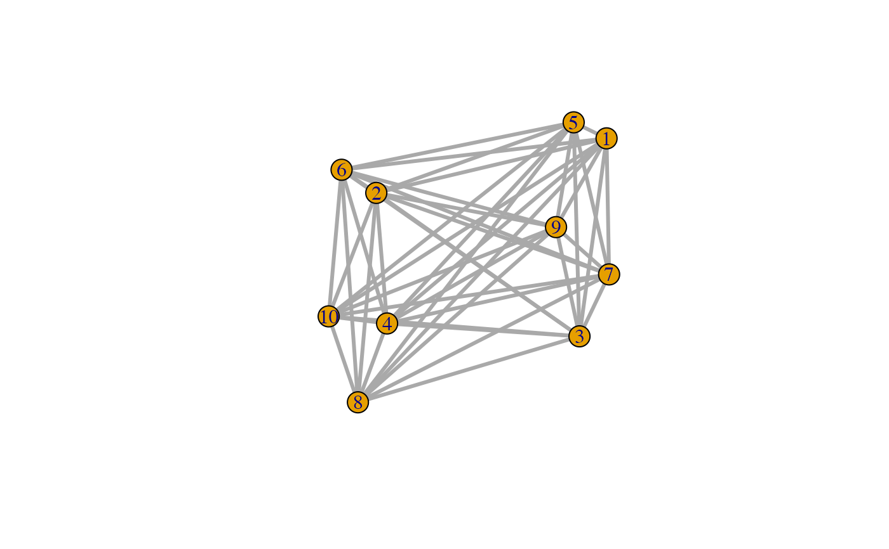

Use a layout which takes a weights
plotNET_groupWeight(
g,
groups,
weigth.within = 100,
weight.between = 1,
preserve.weight.within = FALSE,
preserve.weight.between = FALSE,
doPlot = FALSE,
returnOnlyWeights = TRUE
)Arguments
- g
An igraph object whose edges (
get.edgelist(g)) will be re-weighted according to themembershipargument.- groups
A named numeric vector with
length(V(g))integers representing each group, or, a named character vector describing each group. Ifnames(groups)==NULLthen the names of the vector will be set asnames(groups) == V(g)$name. IfV(g)$name==NULL, the names of the vector will be set by the Vertex index- weigth.within
The weight within a group (
default = 100)- weight.between
The weight within a group (
default = 1)- preserve.weight.within
If
E(g)$weightsis notNULL, try to preserve edge weigths within a group- preserve.weight.between
If
E(g)$weightsis notNULL, try to preserve edge weigths between a groups- doPlot
Plot the igraph object
- returnOnlyWeights
Do not return the graph, just the weights. If
FALSEthis will return the graph object, otherwis it returnsE(g)$weights
Value
A numeric vector with length(get.edgelist(g)) edge weights that will cluster groups defined in membership if a layout is used that can handle edge weights as a parameter (see examples).
See also
Other tools for plotting networks:
plotNET_BA(),
plotNET_SW(),
plotNET_groupColour(),
plotNET_prep()
Examples
# Make a star graph and let the odd numbers cluster together
library(igraph)
g <-make_full_graph(10, directed=FALSE)
E(g)$width <- 3
V(g)$name <- paste(1:10)
membership <- rep(c(1,2),5)
names(membership) <- V(g)$name
E(g)$weight <- plotNET_groupWeight(g,membership,1000,10)
g$layout=layout.fruchterman.reingold(g,weights=E(g)$weight)
#> Warning: `layout.fruchterman.reingold()` was deprecated in igraph 2.1.0.
#> ℹ Please use `layout_with_fr()` instead.
plot(g)

# Make 3 groups by changing the 'membership' vector
membership[3:6] <- 3
names(membership) <- V(g)$name
E(g)$weight <- plotNET_groupWeight(g,membership,1000,10)
g$layout=layout.fruchterman.reingold(g,weights=E(g)$weight)
plot(g)
 # Use plotNET_groupColour for Vertex and Edge group colours
g <- plotNET_groupColour(g, membership, colourE=TRUE)
# Use plotNET_groupColour for Vertex and Edge group colours
g <- plotNET_groupColour(g, membership, colourE=TRUE)
 plot(g)
#> Warning: no non-missing arguments to min; returning Inf
#> Warning: no non-missing arguments to max; returning -Inf
#> Warning: no non-missing arguments to min; returning Inf
#> Warning: no non-missing arguments to max; returning -Inf
plot(g)
#> Warning: no non-missing arguments to min; returning Inf
#> Warning: no non-missing arguments to max; returning -Inf
#> Warning: no non-missing arguments to min; returning Inf
#> Warning: no non-missing arguments to max; returning -Inf
 #> Error in plot.window(...): need finite 'xlim' values
#> Error in plot.window(...): need finite 'xlim' values